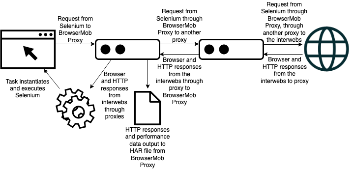
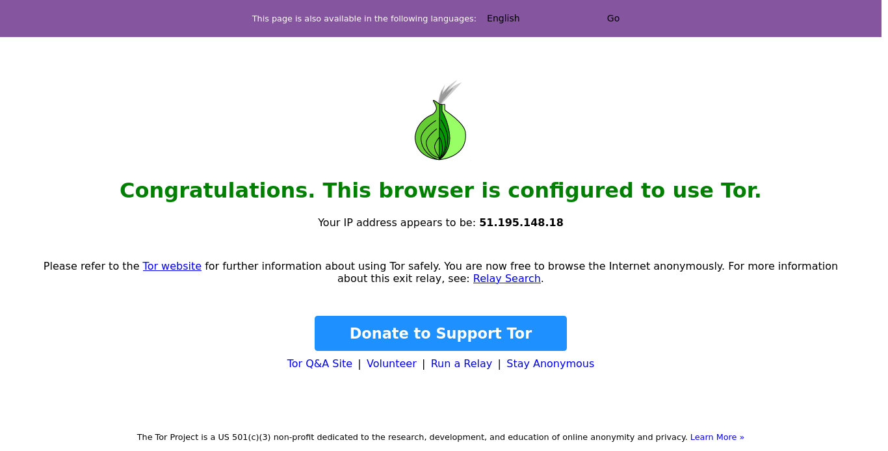

I've been meaning to write this post for seven months to the day... better late than never!
Sometimes I come across situations where I'd like to use web browser automation with the simultaneous ability to edit and/or read HTTP information. Believe it or not, retrieving HTTP data from something like a Selenium is not innately possible. I did, however, find a pretty awesome solution (for Python) called Mobilenium. It uses browsermob-proxy-py (a python wrapper around the Java application BrowserMob Proxy powered by LittleProxy). Mobilenium is pretty awesome and works by starting up a local BrowserMob Proxy instance through which it sends any traffic from Selenium. The BrowserMob Proxy captures and records all HTTP requests and responses made by the web driver. This was all certainly a step in the right direction for me, but it was, however, unfortunately missing just one capability I needed: proxy capability. More specifically, since BrowserMob Proxy is a proxy, I effectively needed a proxy-chaining capability -- so my Selenium traffic would be sent through BrowserMob and then through another proxy to my target, and then back. Like this:
Spoiler alert: I was able to add this capability to Mobilenium. That all you needed to hear? Cool beans! My code (with an example) is in this repo.
I'm not going to go into too much detail about how I managed to do so because it's not too important and was only more of a production because of the list of dependencies that I previously mentioned. I also didn't change much of any of these projects at all - the original authors crushed it. LittleProxy, the ultimate powerhouse behind all of the applications in use here, does have proxy-chaining capability already built in (thank goodness!). Therefore, adding this capability to Mobilenium required "statically reverse engineering" (really just combing through the code) the Mobilenium project, then the browsermob-proxy-py project, then the BrowserMob Proxy project, and finally LittleProxy. The real pain points were the BrowserMob Proxy and LittleProxy because of the fact that they're written in Java and therefore made up of an inordinate amount of code and files. However, thanks to GitHub's repository search tools and grep I was able to find what I was looking for, make appropriate changes to the code, build my version of BrowserMob Proxy from source, implement this custom build of BrowserMob Proxy, and ring that victory bell 🔔!
Let's open an empty ptyhon file and begin by importing our requirements:
Finally, we'll use our mobidriver! I'm going to tell it to navigate to the Tor Project check page, take and save a screenshot, and output the HTTP response. Also note that mobidriver usage is very similar to a pure Selenium webdriver's usage. In fact, in this case it's exactly the same:
Additionally, BrowserMob Proxy, LittleProxy, and Geckodriver all create and write to output logs, and the information can be very helpful for debugging and/or monitoring performance.
One more thing I'd like to mention is that Python Selenium is not great at closing down in entirety when it's asked to. So, as ugly and sketchy as this is, I deal with this problem by first signaling to the driver to quit and then killing any lingering processes. It looks like this:
There you have it -- the sights and sounds of an automated web process. As I mentioned earlier, I Dockerized this code, and it's all available in my Proxied-Mobilenium repo. Happy automating!
Sometimes I come across situations where I'd like to use web browser automation with the simultaneous ability to edit and/or read HTTP information. Believe it or not, retrieving HTTP data from something like a Selenium is not innately possible. I did, however, find a pretty awesome solution (for Python) called Mobilenium. It uses browsermob-proxy-py (a python wrapper around the Java application BrowserMob Proxy powered by LittleProxy). Mobilenium is pretty awesome and works by starting up a local BrowserMob Proxy instance through which it sends any traffic from Selenium. The BrowserMob Proxy captures and records all HTTP requests and responses made by the web driver. This was all certainly a step in the right direction for me, but it was, however, unfortunately missing just one capability I needed: proxy capability. More specifically, since BrowserMob Proxy is a proxy, I effectively needed a proxy-chaining capability -- so my Selenium traffic would be sent through BrowserMob and then through another proxy to my target, and then back. Like this:

Spoiler alert: I was able to add this capability to Mobilenium. That all you needed to hear? Cool beans! My code (with an example) is in this repo.
I'm not going to go into too much detail about how I managed to do so because it's not too important and was only more of a production because of the list of dependencies that I previously mentioned. I also didn't change much of any of these projects at all - the original authors crushed it. LittleProxy, the ultimate powerhouse behind all of the applications in use here, does have proxy-chaining capability already built in (thank goodness!). Therefore, adding this capability to Mobilenium required "statically reverse engineering" (really just combing through the code) the Mobilenium project, then the browsermob-proxy-py project, then the BrowserMob Proxy project, and finally LittleProxy. The real pain points were the BrowserMob Proxy and LittleProxy because of the fact that they're written in Java and therefore made up of an inordinate amount of code and files. However, thanks to GitHub's repository search tools and grep I was able to find what I was looking for, make appropriate changes to the code, build my version of BrowserMob Proxy from source, implement this custom build of BrowserMob Proxy, and ring that victory bell 🔔!
Proxied Mobilenium
My custom version of Mobilenium provides the capability to set an "upstream proxy" (HTTP, HTTPS, SOCKS4, or SOCKS5). Implementing this capability is pretty simple. Let's use Selenium with Firefox's Geckodriver and Tor as our upstream proxy, as an example. Remeber that the Geckodriver needs to be downloadded and the executable needs to be in your PATH, Tor needs to be running in the background, and Tor is a SOCKS5 proxy. These requirements can easily be handled in a container. I've got a Dockerfile in my repo that takes care of all of this.Let's open an empty ptyhon file and begin by importing our requirements:
from selenium.webdriver.firefox.options import Options
from Mobilenium.mobilenium import mobidriver
from selenium import webdriver
import os
# Customize Firefox profile
profile = webdriver.FirefoxProfile()
# Set Private Browsing Mode on browser startup
profile.set_preference('browser.privatebrowsing.autostart', True)
# Update preferences
profile.update_preferences()
# Initialize driver
mob = mobidriver.Firefox(browsermob_binary='browsermob-proxy-SNAPSHOT/bin/browsermob-proxy', firefox_profile=profile, headless=True, upstream_proxy={'socks5Proxy':'127.0.0.1:9050'})
Finally, we'll use our mobidriver! I'm going to tell it to navigate to the Tor Project check page, take and save a screenshot, and output the HTTP response. Also note that mobidriver usage is very similar to a pure Selenium webdriver's usage. In fact, in this case it's exactly the same:
# Navigate to page
mob.get('http://check.torproject.org/')
# Take and save screenshot
mob.save_screenshot('screenshot.png')
# Output http response data
print(mob.response)
{'status': 301, 'statusText': 'Moved Permanently', 'httpVersion': 'HTTP/1.1', 'cookies': [], 'headers': [{'name': 'Date', 'value': 'Sat, 12 Dec 2020 03:05:18 GMT'}, {'name': 'Server', 'value': 'Apache'}, {'name': 'X-Content-Type-Options', 'value': 'nosniff'}, {'name': 'X-Frame-Options', 'value': 'sameorigin'}, {'name': 'X-Xss-Protection', 'value': '1'}, {'name': 'Referrer-Policy', 'value': 'no-referrer'}, {'name': 'Location', 'value': 'https://check.torproject.org/'}, {'name': 'Content-Length', 'value': '307'}, {'name': 'Content-Type', 'value': 'text/html; charset=iso-8859-1'}], 'content': {'size': 0, 'mimeType': 'text/html; charset=iso-8859-1', 'comment': ''}, 'redirectURL': 'https://check.torproject.org/', 'headersSize': 309, 'bodySize': 307, 'comment': ''}

Additionally, BrowserMob Proxy, LittleProxy, and Geckodriver all create and write to output logs, and the information can be very helpful for debugging and/or monitoring performance.
One more thing I'd like to mention is that Python Selenium is not great at closing down in entirety when it's asked to. So, as ugly and sketchy as this is, I deal with this problem by first signaling to the driver to quit and then killing any lingering processes. It looks like this:
import psutil
import time
# Quit driver
mob.quit_all()
# Kill firefox
for proc in psutil.process_iter():
if 'firefox-esr' in proc.name():
proc.kill()
time.sleep(3)
There you have it -- the sights and sounds of an automated web process. As I mentioned earlier, I Dockerized this code, and it's all available in my Proxied-Mobilenium repo. Happy automating!